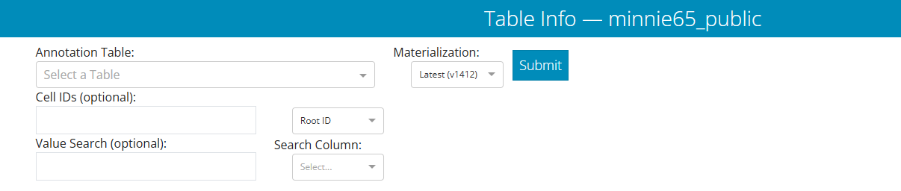

Dash Apps
We have created two webapps to help explore and visualize the data.
These apps were created using the Dash framework, hence the name.
Table Viewer
The Table Viewer app allows you to query individual tables in the database, filter them, and visualize the results in Neuroglancer.

In the Table Viewer, you first select one of the tables from a dropdown in the upper left side.
The Live Query option is not relevent for the public data.
Filter options allow you to limit the query to a subset of the data, if desired. Note that filtering can occur in the tables afterward as well.
The Cell IDs field lets you put in one or more root IDs, cell IDs (i.e. “Nucleus ID”), or IDs from the annotation table being queried. Note that if you use this option, you havet to set the dropdown to the appropriate ID type.
The Value Search field lets you search for a particular value, such as a specific cell type.
Once you have selected your table and set any pre-query filters, click the Submit button to run the query. When the query is done, a green bar will appear below the query input stating that it’s showing the state of the table you queried.
The first set of controls allow you to build a Neuroglancer link for the whole table using the “Generate Link” button.
Optionally, if you would like to make a link where different values of a given column — example, different cell types — are shown in different layers, you can turn on the “Group Annotations” toggle on the right and select the column you want to use for groupings.
After setting these controls, click the “Generate Link” button to create the Neuroglancer link.

The table itself is shown below the controls. You can sort the table by clicking on the column headers, and filter the table by typing in the filter box below the column headers.
For example, if you want to find only cells with cell type “5P-NP” in a cell type column, simply type 5P-NP in the box under the column header. Similarly, to find only cells whose nucleus volume is greater than 500, type >500 in the box under the volume column header in a table with nucleus information.
In addition, individual rows can be selected by clicking on the checkbox to the left of the row.
The left button along the top is a Neuroglancer link specific to the selected rows, if present, or the table as filtered if no rows are selected.
The orange button will deselect all checkboxes, and the “Export to CSV” will download the table as filtered to a CSV.
If the table is too large (well beyond 10,000 rows), there are too many annotations to show in Neuroglancer and no link will be automatically generated.
Connectivity and Cell Type Viewer
The other tool is the Connectivity Viewer, which is designed to let you glance at the synaptic output or input of a given cell and group connectivity by cell type or other annotations.

Along the top, you can enter an ID (either a root ID or a cell ID) and, optionally, a table to use to define cell types for synaptic partners. ::: {.callout-note} Note that if you want to use cell IDs from the annotation table, you must select the Nucleus ID option from the dropdown next to the entry box. :::
The default cell type table option, aibs_soma_nuc_metamodel_preds_v117, is a good all-purpose table predicting coarse cell types on as many cells as possible.
The table aibs_metamodel_mtypes_v661_v2 is the most current version version of the cell type classification, described in (Schneider-Mizell et al. 2023).
Pressing “Submit” will query the database for the cell and its synapses.
Once completed, you will see the bar under the input options turn green and report the data that it is displaying. For example, if we query root id 864691135408247241 and the default cell type table, we will see the following:

Importantly, the data displayed below will match whatever is in this bar — if your query takes a long time or fails for some reason (i.e.bad internet, server error), the tables displayed might be stale.
There are two locations the resulting data is displayed, as we’ll see below. First, a bar of tabs allows you to quickly visualize the data in different ways. Second, the table can present synaptic partners in a more detailed way.
Visualization tabs
The first and default option in the tabs is Tables Only which doesn’t actually show any data. This is merely a placeholder to let you look directly at the tablular data below.
The next tab, Plots lets you visualize the synaptic output of a neuron.
We focus on synaptic output only right now, because the data quality is such that automated dendritic reconstructions are reliable, but automated axon reconstructions are not (see Proofreading section). Because of that, if a neuron has been proofread we trust the cell types of its postsynaptic partners as a group but do not trust the cell types of its presynaptic partners.

These plots are designed to give you a quick overview of a cell’s synaptic outputs.
To add a particularly cell type column, use the Color by value: dropdown below the row of plots to select a column to color by.
These plots are handled in Plotly, so you can hover over the plots to see more information, and you can click and drag to zoom in on a particular region and save by clicking on the camera icon. For the scatterplot, you can also turn on and off individual types by clicking on the legend.
The next tab, Neuroglancer Links lets you visualize the synapses of a neuron in Neuroglancer.

Include No Type toggle specifies whether to show synapses with cells that have no cell type annotation in the grouped cases.The Neuroglancer links generated by these buttons will span all synapses of the queried cell, and do not reflect the filtering in the table below. The synapse annotations are also associated with the synaptic partners, making it easy to browse through a broad sampling of synaptic connectivity.
Connectivity Table
The table below shows a table of all synaptic partners.
One of the first things you can see in the table viewer is that it is split into two tabs, Input and Output, with the tab names for each showing the total number of synapses in each category.
To move between them, just click the tab you want.
Above the Input/Ouput tabs is a link to the Neuroglancer view of the synapses show in the table, after filtering and/or selecting a subset of rows.
The table view here is similar to in the Annotation Table Viewer described above. You can sort the table by clicking column headers, filter the table using the row underneath the headers, and select individual rows. If you select individual rows, the Neuroglancer link will group all synapses from each partner together, making it particularly easy to see how synaptic connectivity relates to neuronal anatomy.
The default sorting of the table is by total number of synapses, but note that both summed total synapse size (net_size) and average synapse size (mean_size) are also shown. These can be particularly important values when thinking about connectivity between excitatory neurons.
A CSV file of the entire table can be downloaded by clicking the “Export to CSV” button.